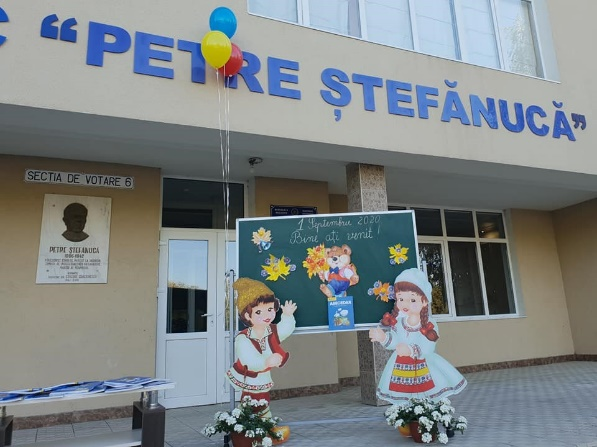

✕
În baza ordinului nr. 476 din 30.08.1985 emis de Direcția Raională de Învățământ Kutuzov (actualmente Ialoveni) directorul instituției, Bulgar Simion a emis ordinul nr. 01 din 30.08.1985 prin care a angajat cadre didactice și nondidactice pentru o nouă instituţie de învăţământ, Şcoala Medie de Cultură Generală nr. 2 care și-a început activitatea într-un edificiu nou. La 11 ianuarie 1986, școala și-a deschis larg ușile pentru elevi și profesori. În perioada anilor 1992 - 1998 instituția a fost reorganizată în Școală - Liceu „Petre Ștefănucă” Ialoveni. Din 1998 şcoala este reorganizată în Liceul Teoretic „Petre Ştefănucă” Ialoveni, director Petrașcu Nazarie. În perioada anilor 2000-2010 la conducerea liceului s-a aflat doamna Terente Zinaida . Vera Balan este desemnată prin concurs director din anul 2011 până în prezent. Din 2012 au fost instituite medaliile ELEVUL ANULUIși PETRE ȘTEFĂNUCĂ pentru absolvenții claselor a XII-a.

La 01.01.2013 în baza deciziei Consiliului Raional Ialoveni, Liceul Teoretic „Petre Ștefănucă” este reorganizat în Instituție Publică cu statut de persoană juridică. În anul de studii 2021-2022 în liceu studiază 1069 elevi ghidați de 63 cadre didactice (grad superior-3, gradul I-22, gradul II-29). Liceul Teoretic „Petre Ștefănucă” este printre primele instituţii de învăţământ din Republica Moldova, care a început promovarea şi implementarea Educaţiei Incluzive prin înfiinţarea Centrului de Resurse pentru Educaţia Incluzivă (2012). În 2016 a fost creat modelul de incluziune educațională a copiilor cu dizabilități severe în instituția de învățământ general, dezvoltat cu suportul CR Ialoveni și AO Lumos Foundation Moldova.
Institutia Publica Liceul Teoretic „Petre Ştefănucă”, amplasată în inima oraşului Ialoveni, bucură băştinaşii prin numele ce-l poartă şi efortul pe care-l depune colectivul profesoral pentru asigurarea unei educații de calitate raportată la rezultatele înregistrate de elevi la concursurile raionale, naționale și internaționale. Liceul Teoretic „Petre Ştefănucă” dorește să fie un garant al calităţii şi eficienţei procesului educaţional, urmărind aplicarea corectă a politicilor educaţionale elaborate de Ministerul Educaţiei și Cercetării prin formarea continuă a cadrelor didactice şi crearea unui climat de muncă stimulativ în vederea facilitării dezvoltării individuale a fiecărui tânăr beneficiar al sistemului educaţional, astfel încât să dea sens încrederii şi aspiraţiilor sale, atât pe plan personal, cât şi profesional. Ne propunem să consolidăm parteneriatele cu instituțiile: Colegiul Național „Mihail Sadoveanu”, Pașcani, România, Colegiul Național „David Prodan”, Cugir, România, Școala de băieți din Abingdon, Marea Britanie și să stabilim parteneriate noi cu instituții din raion, republică și de peste hotare.
